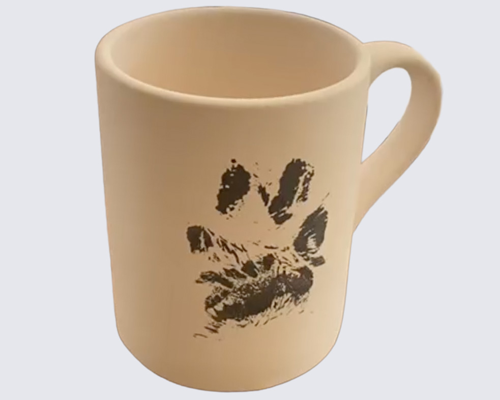

Capture your furry friend's paw print on ceramic. A lasting memory you'll treasure forever. Safe, quick, and meaningful for dogs and cats of all sizes.

Bring your pet to our studio for a quick, stress-free experience. We'll capture their paw print on the ceramic piece of your choice.
For nervous or anxious pets, we recommend our at-home Pet-Set instead.

If your pet prefers the comfort of home — or gets anxious in new places — our Pet-Set lets you create their paw print keepsake at your own pace.
Additional brushes and accessories available for purchase.
All materials are 100% non-toxic and pet-safe. We use water-based colors that wash off easily. The process is quick and stress-free.
Dogs and cats of all sizes. A beautiful memorial keepsake, a gift for pet lovers, or simply a way to celebrate your furry family member.
For in-studio paw prints, we recommend booking ahead to ensure we have time for you. Email info@puraceramica.pt or call us. Pet-Sets can be purchased during opening hours — calling ahead is recommended to confirm availability.
In-studio prints take just a few minutes. Pet-Set at your own pace at home. All finished pieces ready for pickup in 7–14 days after drop-off.
Questions? Email info@puraceramica.pt or call +351 932 523 750
Everything you need to know about our studio, the painting process, and more.
Visit FAQ